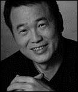
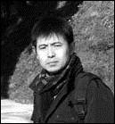

Tra il 19 e 20 de noviembre se celebrará en Medellín el Encuentro Internacional de Poesía China-ColombiaEl dragón en el Valle de la Poesía, organizado por elFestival Internacional de Poesía de Medellín, il Compañía ZhongKun de China e il Movimiento Poético Mundial.
Los poetas Luo Ying, Tang Xiaodu, Zhang Qinghua, Lin Mang, Han Zhuorong, Jiang Tao y Yang Ke; y los escritores Zhang Ling, Yi Ling y Wang Guangming, de la República Popular China junto a los poetas colombianos Juan Manuel Roca, Guillermo Martínez González, Rafael Patiño, Samuel Vásquez, Jairo Guyzmán y Luis Eduardo Rendón tomarán parte en el evento, que constará de seis lecturas de poemas y dos conversatorios de los escritores chinos con el público.
El Encuentro hace parte de un ciclo de lecturas internacionales de poesía que quiere promover el entendimiento entre los poetas y tradiciones poéticas de los pueblos, en una ciudad que es considerada una capital mundial para la poesía, con un público extraordinariamente sensible a la forma más alta del lenguaje.
La entrada a todos los actos es libre y gratuita. El Encuentro contará con el apoyo del Municipio de Medellín, el Municipio de Envigado, Confiar Caja Cooperativa, Coofinep, el Instituto Confucio, Telemedellin y Publik.
Es la primera vez que visita a Latinoamérica y a Colombia una delegación amplia de poetas y escritores de China, que solo tendrá contacto con el público en Buenos Aires (Argentina) y en Medellín. La programación prevista es la siguiente:
MARTES 19 DE NOVIEMBRE
10:00 a.m.. Auditorio Coofinep. Via 49 # 50. Edificio del Café. Piso 13. Diálogo con elpúblico.Escritor Wang Guangming.
LECTURAS DE POEMAS
6:30 PM. Auditorio del Edificio de la Cultura. Cámara de Comercio.Zhang Qinghua, Lin Mang, Jairo Guzman, Rafael Patiño.
6:30 PM. Teatro Ateneo Porfirio Barbajacob.Han Zuorong, Jiang Tao, Samuel Vásquez, Luis Eduardo Rendon.
6:30 PM. Torre de la Memoria. Biblioteca Pública Piloto.Luo Ying, Tang Xiaodu, Yang Ke, Juan Manuel Roca, Guillermo Martínez.
MIÉRCOLES 20 DE NOVIEMBRE
4:00 Museo de Antioquia. Sala del Concejo. Diálogo con el público:Escritores Zhang Ling, Yi Ling. Moderatore: Guillermo Martínez.
4:00 PM. Casa Museo Otraparte. Envigado. Lettura di poesie.Yang Ke, Lin Mang, Luis Eduardo Rendon, Jairo Guzman. Diálogo con el público.
4:30 PM. Auditorio Coofinep. Via 49 # 50. Edificio del Café. Piso 13. Lettura di poesie.Han Zuorong, Tang Xiaodu, Tallulah Flóres, Rafael Patiño. Diálogo con el público
6:30 PM. Parque Biblioteca Débora Arango. Envigado. Lettura di poesie. Luo Ying, Zhang Qinghua, Juan Manuel Roca, Samuel Vásquez.
Poemas de tres poetas chinos participantes en el gran evento programado en Medellín.
LUO YING

LUO YING
Nació en Lanzhou, China. Ha vivido y trabajado tanto en Beijing como en California, Stati Uniti. Es poeta y escalador de montañas (ha ascendido los montes Kilamanjaro, Muztahgata, Aconcagua y Chou Oyu, entre otros picos de los cinco continentes y ha realizado expediciones al Polo Norte y al Polo Sur). Es vicepresidente del Instituto de Investigación de la Poesía China Contemporánea de la Universidad de Beijing; igualmente es miembro de la Asociación de Escritores de China y director de la Sociedad de Poesía de China. Entre sus publicaciones poéticas se encuentran: The Green Tara Series; Empty Glasses and Empty Tables; 7+2 Mountain Climber’s Journal; Diary of an Educated Youth y Water – Charms.Obtuvo el Premio de Literatura de la Asociación de Escritores de Mongolia en 2008. Sus poemas han sido publicados en inglés, Francese, español y japonés.
PADRE
Una raída piel de ciervo en la selva
Sospecho que es la piel de mi padre
después de trescientos años de meditación, sólo se levantó y se fue
La piel del ciervo ha sido desgastada por el clima desde entonces
Y como no hay madre que ordene su vida
él muy probablemente descolgó una útil piel negra de oso
y con la apariencia de un oso cazó y pescó
nunca respondió ninguna de las preguntas filosóficas de la historia
A escondidas amasó rocas hasta pulverizarlas
Velozmente desarraigó bosques enteros
Fermentó vino de un lago 300 anni più tardi, bebido de un trago
entonces sacó su larga espada y tajó cinco grandes montañas
Durmió un centenar de años sin pestañear
y ni una vez dijo mi nombre
Él dice que olvidó mi apodo de infancia
En el momento que me hizo de un jabalí
JIANG TAO

JIANG TAO
Nació en Tianjin, China, in 1970. Estudió ingeniería biomédica en la Universidad de Tsinghua y obtuvo un doctorado en Literatura China Moderna en la Universidad de Pekín. Actualmente enseña en el Departamento de Chino y Literatura de la Universidad de Pekín. Fue editor de las revistas populares de poesía Offset y Poetry Communications. Su primer libro, Bird Sutras, fue publicado en 2005. También publicó los librosFour poems e Mourning for Sometimes. Ganó el Premio Liu Li’an de Poesía en 1997.
TRIBU DE PALAEOPITHECUS
el bosque estaba lleno de frutas caídas, una alfombra escarlata
cuyo origen radica en el cambio geológico
las aguas habían retrocedido, el diente de sable del tigre estaba podrido
alrededor del barro vacío discutíamos el futuro
los viejos recién se arrastraban desde la evolución,
alzando sus viejos puños
los jóvenes ya no podían guardar silencio, habían conseguido
ser los primeros en comer venado sika: la ambición para mover
una montaña, con carencias,
a pesar de que podían cruzar el río, al norte y al sur
los campos eran sólo una mesa de comedor
la tan llamada república, muy bulliciosa,
Tuttavia, el despotismo del otoño alejaba moscas y mosquitos
afortunadamente todos estábamos de pie,
capaces de ver las estrellas, luchar con las manos vacías para liberarnos
de la cadena alimenticia
pero la fuerza del trabajo de octubre
aún se inclinaba hacia el excedente: no hay necesidad de pintar nuestra piel,
o cocinar
con carne para la leña, sólo los machos seguían
poniendo a las hembras de cabeza, cantando esa belleza
hasta que, almeno, con flores de primavera y lunas de otoño,
decir ‘Te quiero’ en voz alta tardaría todavía dos millones de años
YANG KE
YANG KE
Es un poeta y editor chino. Nació en la provincia de Guangxi, pero desde 2008 se estableció en Guangzhou. Publicó the 1998 Yearbook of China’s New Poetry. Es el Vicepresidente de la Asociación de Escritores de Guangdong. En el presente año participó en el Icelandic-Chinese Poetry Festival. Uno de sus libros de poesía más conocidos esRelevant and Irrelevant (2009).
Ha sido profesor universitario, ha dado ciclos de conferencias sobre “Apreciación de la Nueva Poesía”, en recitos de secundaria y de universidad. Ha viajado a tertulias y conferencias en Japón, Corea y muchos otros países. Ha ganado dieciséis premios importantes, entre ellos el Primer Premio de la provincia de Guangxi.
CAMBIO DE TIEMPO EN VERANO
Antes de tiempo parten trenes
Maduran niñas
Antes de tiempo su cumpleaños
Velas son apagadas
Y en un bien tramado asesinato
Un cuchillo resplandeciente entra limpio
Y sale manchado de sangre
Antes de tiempo
No obstante pollitos se niegan a romper su cáscara
La luna falla en ser completamente brillante
Como es usual a medianoche
No obstante a un escritor realista corriendo en una calle matutina
Lo ha matado el primer bus
Que arrancó antes de tiempo
Entonces el Humor Negro y la Escuela del Absurdo
Han sido al fin comprendidos
Y el tipo que va a la cita al antiguo lugar
A la hora antigua conoce a otra chica
Los muertos incinerados
Obtuvieron un reporte de edad equivocada
Y ya que una hora de sol y aire
Les fue robada sin que lo advirtieran, los hombres quedan estupefactos